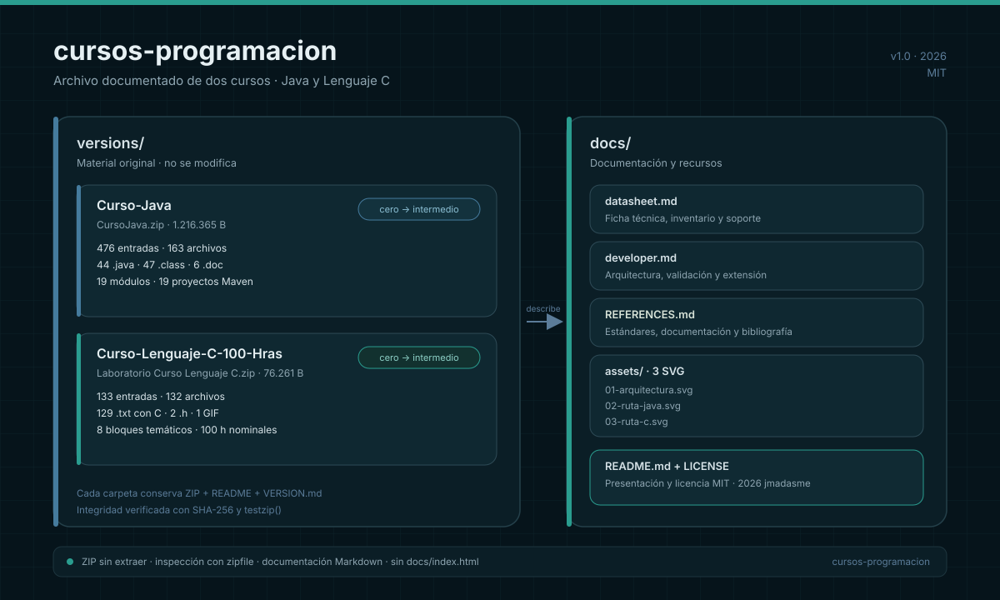
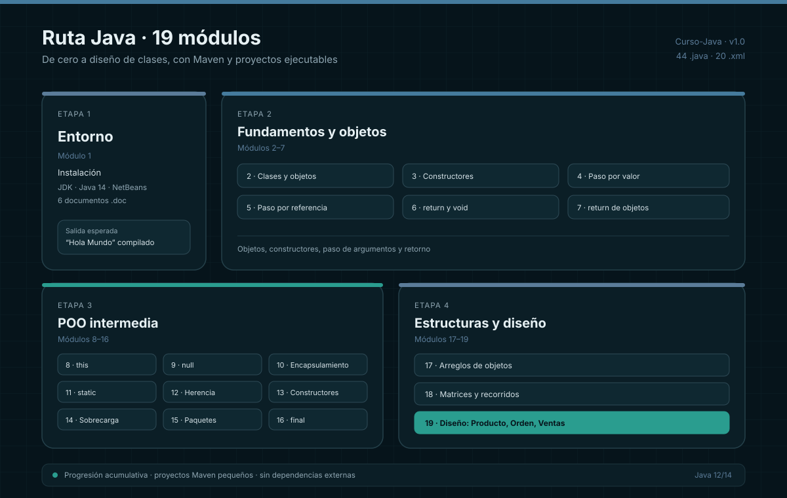
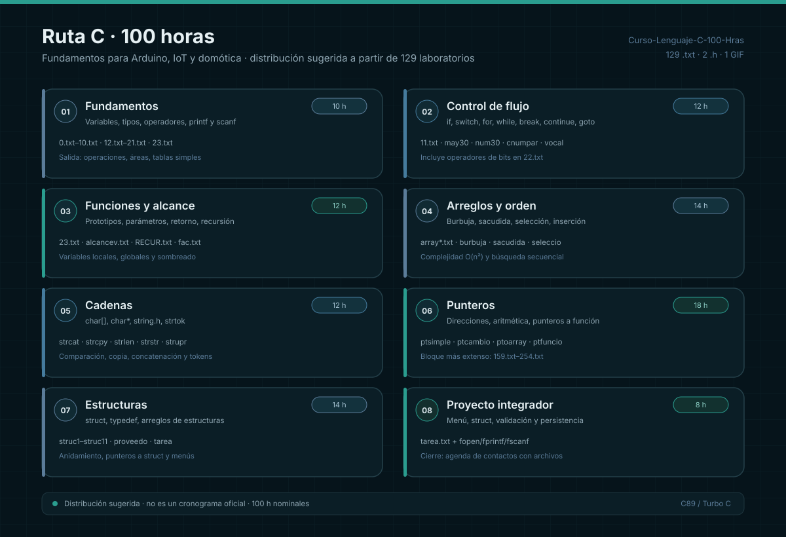

Java y C.
En dos archivos.
Dos cursos completos, conservados como ZIP, con su README y su contexto.

Cursos de programación: dos cursos, dos archivos
Recorrido por cursos-programacion: el contrato del archivo, los ZIP verificados con SHA-256, el widget de comunidad y cómo servir el sitio en local.
Cursos de programación: dos cursos, dos archivos
Recorrido por cursos-programacion: el contrato del archivo, los ZIP verificados con SHA-256, el widget de comunidad y cómo servir el sitio en local.
Fragmentos literales de README.md, docs/index.html y docs/assets/community.js. El ZIP del curso de C no está en el repositorio público: se entrega por solicitud.
Qué es y por qué existe
Archivo de dos cursos de programación conservados como paquetes ZIP: uno de Java, con 44 fuentes, 47 clases compiladas y 19 módulos Maven, y otro de lenguaje C de cien horas, con 129 archivos de código en estilo Turbo C. No es una plataforma de e-learning ni un curso interactivo, sino el material original empaquetado para consulta y descarga.
El repositorio interesa a docentes y estudiantes que quieran revisar ejercicios, estructuras y progresiones didácticas de principios de los años dos mil. Los ZIP se conservan inmutables, con hash SHA-256 documentado, y el README advierte que el material no fue compilado ni ejecutado: es un archivo histórico, no una versión modernizada. Solo el curso de Java es público; el de C se solicita.
Documentación preservada
El README original, completo y en su contexto.

Dos cursos de introducción a la programación, preservados como material didáctico y acompañados de documentación técnica.
Contenido
- Propósito
- Qué contiene el repositorio
- Aviso honesto
- A quién está dirigido
- Requisitos
- Cómo descomprimir
- Curso de Java
- Curso de Lenguaje C · 100 horas
- Plan de estudio sugerido
- Diagramas
- Verificación técnica
- Solución de problemas
- Advertencias
- Documentación y licencia
Modelo de acceso
La primera versión (Curso-Java) es pública y gratuita: es el punto de partida para entender el proyecto, probarlo y construir sobre él. La versión restante son privadas y se comparten solo mediante solicitud.
Alcance del repositorio público: solo está incluida
versions/Curso-Java. Las rutas a otras versiones se mencionan como referencia histórica y no forman parte de este repositorio; se comparten por solicitud.Última versión: privada. Las mejoras, optimizaciones, depuraciones y variantes de hardware no se entregan de forma anónima: se solicitan y se acuerdan con un alcance claro.
| Versión | Acceso | Enlace |
|---|---|---|
Curso-Java |
Pública | Ver carpeta |
Curso-Lenguaje-C-100-Hras |
Privada | Solicitar acceso |
La licencia MIT de este repositorio se aplica únicamente a la primera versión pública. Las versiones privadas se rigen por el acuerdo de acceso correspondiente.
1. Propósito
Este repositorio reúne dos cursos completos de programación dictados por jmadasme y conservados en su formato original: dos archivos ZIP, cada uno con su README y su ficha de versión. El objetivo es preservarlos, describirlos con precisión y permitir que otra persona los estudie o adapte sin abrir primero los comprimidos a ciegas.
Los cursos son complementarios:
- Curso de Java: parte desde cero y llega hasta el diseño de clases, la herencia, el encapsulamiento, los arreglos, las matrices y la organización en paquetes. Es la entrada a la programación orientada a objetos y a Maven.
- Curso de Lenguaje C · 100 horas: trabaja la base imperativa y de memoria —variables, control de flujo, funciones, arreglos, cadenas, punteros y estructuras— con enfoque de laboratorio. El autor lo presenta como base para Arduino, IoT y domótica.
La convivencia tiene sentido pedagógico: C muestra cómo funcionan la memoria y el control; Java muestra cómo modelar un problema con objetos y organizar un programa grande. Muchos ejemplos de C (punteros, estructuras, arreglos de caracteres) reaparecen en Java de forma más segura y abstracta.
Es un archivo documentado, no una plataforma de e-learning. No hay videos, diapositivas, inscripción, evaluaciones automáticas ni servidor. Hay material empaquetado y la documentación necesaria para usarlo.
1.1. Qué resuelve
Un ZIP olvidado es difícil de evaluar: no se sabe qué contiene, en qué estado está, qué versión de Java o C espera, ni si sus ejemplos compilan. Este repositorio aporta un inventario verificable (476 registros en Java, 133 en C), contexto de uso (requisitos, descompresión, compilación y ejecución), límites explícitos (archivos incompletos, dependencias históricas y erratas) y trazabilidad (hash SHA-256, ficha de versión y origen declarado).
1.2. Qué no es
No es una versión modernizada —los ZIP no se modifican—, ni un curso nuevo, ni un paquete instalable, ni una biblioteca de código, ni un repositorio con historial Git propio en el momento de la importación. La autoría del material original es de jmadasme.
2. Qué contiene el repositorio
2.1. Vista rápida
| Dimensión | Curso de Java | Curso de Lenguaje C |
|---|---|---|
| Carpeta | versions/Curso-Java/ |
versions/Curso-Lenguaje-C-100-Hras/ |
| ZIP | CursoJava.zip |
Laboratorio Curso Lenguaje C.zip |
| Tamaño del ZIP | 1.216.365 bytes (≈1,16 MiB) | 76.261 bytes (≈74,5 KiB) |
| Descomprimido | 1.317.620 bytes (≈1,26 MiB) | 85.322 bytes (≈83,3 KiB) |
| Entradas | 476 (313 directorios + 163 archivos) | 133 (1 directorio + 132 archivos) |
| Código | 44 .java, 47 .class |
129 .txt con C, 2 .h |
| Documentos | 6 .doc de instalación |
— |
| Auxiliares | 20 .xml (poms), 40 .lst |
1 GIF (tabla ASCII) |
| Organización | 19 módulos numerados | 129 laboratorios + 2 cabeceras |
| Nivel | Cero a intermedio/avanzado | Cero a intermedio |
| Herramientas | JDK 12/14, Maven, IDE | Compilador C89, editor |
| Estado | Material de curso, sin tests | Material de curso, sin tests |
2.2. Mapa
cursos-programacion/
├── README.md
├── LICENSE # MIT, Copyright (c) 2026 jmadasme
├── docs/
│ ├── datasheet.md # ficha de usuario e inventario
│ ├── developer.md # arquitectura y mantenimiento
│ ├── REFERENCES.md # estándares y bibliografía
│ └── assets/
│ ├── 01-arquitectura.svg
│ ├── 02-ruta-java.svg
│ └── 03-ruta-c.svg
└── versions/
├── Curso-Java/
│ ├── CursoJava.zip # material original (no modificar)
│ ├── README.md
│ └── VERSION.md
└── Curso-Lenguaje-C-100-Hras/
├── Laboratorio Curso Lenguaje C.zip
├── README.md
└── VERSION.md
Cada carpeta de versions/ es una unidad inmutable: ZIP original, README heredado y VERSION.md con origen y advertencias. Las dos fichas declaran que el contenido se importó desde el repositorio homónimo de GitHub y que se excluyeron credenciales, bases de datos y artefactos de ejecución. En la inspección no se encontraron .env, claves privadas ni cadenas de conexión. No renombres el ZIP ni edites su contenido: el hash documentado dejaría de coincidir.
3. Aviso honesto
Este repositorio documenta material de curso, no un producto terminado.
3.1. Fechas y vigencia
- Java: archivos entre 2019-09-19 y 2022-10-22; los seis
.docson de abril de 2020. - C: archivos entre 2005-04-26 y 2022-10-22. El estilo (funciones sin retorno,
gets,conio.h,dos.h) es de la tradición Turbo C / DOS, no de C moderno. - Los poms declaran Java 12 y 14; las clases incluidas tienen major version 57 (Java 13). Se recomienda JDK 14+ para reproducir el entorno, aunque el código es sencillo y suele compilar en versiones nuevas.
- Java 12 y 14 están descatalogados para producción. Para aprender conviene un LTS actual (17/21+); para reproducir el curso, JDK 14.
3.2. Completitud
Las fuentes Java de los 19 módulos están completas (44 .java, con 2 copias duplicadas), los documentos de instalación también, pero en .doc binario, y los 19 proyectos Maven son funcionales en su mayoría, con algunos target/ desactualizados. No hay tests: src/test/java existe pero está vacío. En C, los laboratorios están completos en su mayoría, aunque dos dependen de cabeceras inexistentes y muchos archivos son solo código, sin enunciado. No hay slides, videos ni certificados.
3.3. Autoría y licencia
LICENSE aplica MIT con Copyright (c) 2026 jmadasme a este repositorio: documentación, organización y recursos creados para él. El material didáctico dentro de los ZIP fue producido por jmadasme; si se reutiliza, corresponde atribuir la autoría y conservar el aviso. Las marcas de terceros (Java, Oracle, Apache NetBeans, Maven, GCC) pertenecen a sus titulares.
3.4. Sobre la inspección
Toda la información se obtuvo leyendo los ZIP con zipfile de Python, sin extraerlos. Se verificó la integridad con testzip() (sin errores), se contaron entradas y extensiones, se leyeron las fuentes y se muestrearon los binarios. No se compiló ni ejecutó el material: las afirmaciones sobre compilación son análisis estático.
4. A quién está dirigido
4.1. Curso de Java
Pensado para personas sin conocimientos previos, según su presentación: “desde nivel cero hasta ya avanzado”, con dedicación y disciplina. También sirve a quien ya programa en otro lenguaje, a docentes que buscan una secuencia progresiva de ejemplos y a quienes repasan encapsulamiento, herencia, static, final, paquetes y composición. No cubre Spring Boot, bases de datos, interfaces gráficas ni concurrencia.
4.2. Curso de C
Dirigido a quienes necesitan base imperativa y de memoria antes de pasar a hardware o a lenguajes de alto nivel. El README original lo presenta como base para Arduino, IoT y domótica. Sirve a principiantes, estudiantes de electrónica que leerán código de microcontroladores, docentes de laboratorio y quienes heredaron código de la era Turbo C. No cubre C moderno con testing, CMake, sanitizers o bibliotecas de red.
4.3. Prerrequisitos personales
| Curso | Conocimientos previos | Tiempo estimado | Disciplina |
|---|---|---|---|
| Java | Ninguno; editor y terminal ayudan | 50–70 h para los 19 módulos | Alta: progresión acumulativa |
| C | Ninguno; aritmética básica | 80–110 h para los 129 laboratorios | Alta: los punteros exigen práctica |
5. Requisitos
5.1. Comunes
- Linux, macOS o Windows (con WSL, MSYS2 o Git Bash para los comandos de terminal).
- Menos de 10 MB para los ZIP; 50–100 MB si se extraen y compilan todos los proyectos.
- Editor o IDE: IntelliJ IDEA, Eclipse, VS Code, NetBeans, Code::Blocks, CLion o Vim.
unzip, Expand-Archive o Python 3.- Lector de
.doc: LibreOffice Writer, Word, Google Docs,antiwordocatdoc.
5.2. Java
| Herramienta | Versión | Para qué |
|---|---|---|
| JDK | 14+; ideal 17/21 LTS | Compilar y ejecutar |
| Maven | 3.6+ | Resolver los 19 pom.xml |
javac / java |
Incluidos en el JDK | Compilar sin Maven |
| IDE | NetBeans, IntelliJ, Eclipse o VS Code | Editar e importar |
java -version
javac -version
mvn -version
Si java -version es anterior a 13, las clases precompiladas fallarán con UnsupportedClassVersionError. Recompila desde las fuentes o instala un JDK 14+.
5.3. C
| Herramienta | Versión | Para qué |
|---|---|---|
| GCC o Clang | GCC 9+ / Clang 10+ | Compilar laboratorios |
make |
Opcional | No hay Makefile en el ZIP |
| Terminal | Bash, Zsh, PowerShell o CMD | Ejecutar binarios |
| Editor | Con resaltado de sintaxis | Convertir .txt en .c |
gcc --version
El material histórico se compila mejor con -std=gnu89; el código nuevo, con -std=c17 -Wall -Wextra -Wpedantic.
5.4. Dependencias del repositorio
No hay requirements.txt, pom.xml raíz, package.json ni gestor de dependencias. No hay nada que instalar para leer la documentación. Las dependencias aparecen solo al compilar: JDK/Maven para Java y un compilador C para los laboratorios. No ejecutes pip install ni npm install para usar este proyecto. Cualquier equipo con 2 GB de RAM y doble núcleo basta; no se requiere internet, salvo la primera descarga de plugins de Maven.
6. Cómo descomprimir
6.1. Regla de oro
No extraigas los ZIP dentro de versions/. Llenarías el repositorio de target/, .class, duplicados (1) y temporales, y perderías la separación entre archivo original y material de trabajo. Extrae en ~/cursos/ o /tmp/cursos/.
6.2. Linux y macOS
mkdir -p ~/cursos/java ~/cursos/c
unzip -q "versions/Curso-Java/CursoJava.zip" -d ~/cursos/java
unzip -q "versions/Curso-Lenguaje-C-100-Hras/Laboratorio Curso Lenguaje C.zip" -d ~/cursos/c
El ZIP de Java crea cursojava/; el de C crea Laboratorio Curso Lenguaje C/. Hay espacios y caracteres no ASCII en algunas rutas: cita siempre.
6.3. Windows PowerShell
New-Item -ItemType Directory -Force -Path "$HOME\cursos\java" | Out-Null
Expand-Archive -Path "versions\Curso-Java\CursoJava.zip" -DestinationPath "$HOME\cursos\java"
New-Item -ItemType Directory -Force -Path "$HOME\cursos\c" | Out-Null
Expand-Archive -Path "versions\Curso-Lenguaje-C-100-Hras\Laboratorio Curso Lenguaje C.zip" -DestinationPath "$HOME\cursos\c"
6.4. Alternativa con Python 3
Si unzip no está o muestra mal los acentos del módulo DiseñoClases, Python 3 respeta la bandera UTF-8:
python3 -m zipfile -l versions/Curso-Java/CursoJava.zip | head
python3 -m zipfile -e versions/Curso-Java/CursoJava.zip ~/cursos/java
python3 -m zipfile -e "versions/Curso-Lenguaje-C-100-Hras/Laboratorio Curso Lenguaje C.zip" ~/cursos/c
6.5. Verificar antes de usar
sha256sum versions/Curso-Java/CursoJava.zip
sha256sum "versions/Curso-Lenguaje-C-100-Hras/Laboratorio Curso Lenguaje C.zip"
Los valores están en Verificación técnica. Si no coinciden, el archivo se descargó mal o fue modificado.
Para listar sin extraer: unzip -l archivo.zip | less o, con Python:
import zipfile
with zipfile.ZipFile("versions/Curso-Java/CursoJava.zip") as z:
for i in z.infolist():
print(f"{i.file_size:>8} {i.filename}")
7. Curso de Java

7.1. Perfil
Es una secuencia de 19 módulos numerados que va desde la instalación hasta un pequeño sistema de ventas con clases, objetos, arreglos y métodos. Cada módulo introduce un concepto y lo aplica en un proyecto ejecutable; varios reutilizan la clase Persona para mostrar la evolución de un mismo modelo.
Tiene dos capas: una conceptual (documentos del módulo 1 y comentarios) y una práctica (19 proyectos Maven o carpetas de fuentes). La presencia de Maven es deliberada: enseña la estructura src/main/java, el pom.xml, el ciclo compile/package y la separación entre fuentes y artefactos. No llega a dependencias externas ni plugins.
7.2. Los 19 módulos
| # | Módulo | Tema | .java |
|---|---|---|---|
| 1 | 1.- Instalacion |
Puesta en marcha: 6 .doc (JDK, Java 14, Apache, entorno, hola mundo) |
0 |
| 2 | 2.- java clases |
Clases y objetos: Aritmetica, Persona; sin Maven |
4 |
| 3 | 3.- java contructores |
Constructores: tres versiones de ProyectoAritmetica |
7 |
| 4 | 4.- Paso por valor |
Paso de argumentos | 1 |
| 5 | 5.- Paso por Referencia |
Referencias a objetos | 2 |
| 6 | 6.- Return usando Tipos Primitivos y palabra void |
return y void |
1 |
| 7 | 7.- Return usando Tipos Object |
Retorno de objetos (Suma en el mismo archivo) |
1 |
| 8 | 8.- Uso de la palabra this en Java |
this |
1 |
| 9 | 9.- Uso de la palabra null en Java |
null |
1 |
| 10 | 10.- PruebaEncapsulamiento |
Encapsulamiento y copias (1) |
4 |
| 11 | 11.- EjemploEstatico |
static y contador de personas |
1 |
| 12 | 12.- Herencia |
Persona → Empleado y Cliente |
4 |
| 13 | 13.- SobrecargaContructores |
Constructores sobrecargados | 3 |
| 14 | 14-. SobrecargaMetodos |
Métodos sobrecargados y resolución | 2 |
| 15 | 15.- Paquetes |
Paquetes e import (com.jm.Utilerias) |
2 |
| 16 | 16.- PalabraFinal |
final y constantes |
3 |
| 17 | 17.- Arreglos |
Arreglos de objetos | 2 |
| 18 | 18.- EjemploMatrices |
Matrices int[][] y Persona[][] |
2 |
| 19 | 19.- DiseñoClases |
Producto, Orden, Ventas; composición |
3 |
Conteos: 44 .java (42 efectivos: el módulo 10 tiene dos copias (1)), 47 .class, 20 .xml (19 poms + un duplicado), 40 .lst, 6 .doc y 6 .netbeans_automatic_build.
7.3. Documentos de instalación
El módulo 1 no tiene código. Sus seis archivos son Word 97-2003 (.doc) binarios, no .docx; GitHub no los previsualiza y algunos editores los abren en modo compatibilidad.
Los seis son: 1.- Instalando JDK.doc (113 KB), 2.- Instalando java 14.doc (43 KB), 3.- Instalando apache.doc (139 KB), 4.- Configurando apache y hola mundo.doc (462 KB), Entorno.doc (18 KB) y ProyectoHolaMundo.doc (439 KB). Fueron creados el 27 y 29 de abril de 2020. Para abrirlos: antiword archivo.doc, libreoffice --headless --convert-to txt archivo.doc o LibreOffice Writer/Word. No se incluye el instalador del JDK ni de NetBeans: los documentos describen el procedimiento. Las versiones de 2020 están desactualizadas; para un curso nuevo usa un JDK LTS y el IDE actual.
7.4. Estructura interna
Modulo/
├── pom.xml
├── src/
│ ├── main/java/
│ │ ├── ClasePrincipal.java
│ │ └── OtraClase.java
│ └── test/java/ # vacío en la mayoría
└── target/
├── classes/ # .class compilados
├── generated-sources/
├── maven-status/
└── test-classes/
El pom.xml típico declara groupId cl.com.gm, un artifactId igual al nombre del proyecto, packaging jar, codificación UTF-8 y maven.compiler.source/target en 14. No hay dependencias externas, plugins de ejecución ni configuración de tests. El groupId es cl.com.gm, aunque el módulo 19 usa com.jm.ventas: una inconsistencia histórica. El target/ incluido es residuo de compilaciones, no una entrega oficial.
7.5. Cómo ejecutar
Sin Maven, módulo 2:
cd ~/cursos/java/cursojava/"2.- java clases"/ProyectoAritmetica
javac Aritmetica.java PruebaAritmetica.java
java PruebaAritmetica
# resultado = 8
Con Maven:
cd ~/cursos/java/cursojava/"10.- PruebaEncapsulamiento"/Encapsulamiento
mvn -q clean compile
java -cp target/classes PruebaPersona
Si el pom declara Java 14 y tienes 17/21, sobrescribe sin editar:
mvn -q clean compile -Dmaven.compiler.source=17 -Dmaven.compiler.target=17
Sin Maven, todo el árbol (módulo 19):
cd ~/cursos/java/cursojava/"19.- DiseñoClases"/DisenoClases
mkdir -p out
javac -d out $(find src/main/java -name "*.java")
java -cp out Ventas.Ventas
La salida muestra Orden #:1, total $150.0 y los dos productos con su id, nombre y precio.
Mayúsculas: el paquete es
Ventasy la clase también. En Linux/macOS,ventas.Ventasfalla; usaVentas.Ventas.
Varios módulos declaran una segunda clase en el mismo .java (Suma dentro de PalabraReturnClases.java, Persona dentro de EjemploEstatico.java). Es válido si solo una clase es public y el archivo se llama como ella.
7.6. Ejemplos representativos
Clase con método: Aritmetica declara public int sumar(int a, int b) { return a + b; }; PruebaAritmetica lo invoca con new Aritmetica() y sumar(5, 3), e imprime resultado = 8. Ilustra declaración de clase, método con parámetros y retorno, instanciación, invocación y concatenación.
Aritmetica a = new Aritmetica();
System.out.println(a.sumar(5, 3)); // resultado = 8
Encapsulamiento: Persona declara nombre y borrado como private, los expone con getNombre/setNombre e isBorrado/setBorrado, y sobrescribe toString(). Es el ejemplo canónico de campos privados, constructores, this y convención get/is/set.
Herencia y composición: el módulo 12 modela Persona como base, Empleado con sueldo y Cliente con fecha y estado; EjemploHerencia crea ambos, asigna atributos heredados y los imprime. El módulo 19 es el más cercano a un sistema real: Producto encapsula id, nombre y precio; Orden contiene hasta 10 productos y calcula el total; Ventas crea dos productos y muestra la orden. Es un ejercicio de composición: Orden “tiene” Producto, no “es” un Producto.
7.7. Ejercicios sugeridos
No hay enunciados formales en el ZIP; estos se derivan de los módulos. Resuélvelos en una copia extraída.
- Aritmética ampliada: agregar
restar,multiplicarydividir, con validación de división por cero. Criterio: los cuatro resultados se imprimen sin excepciones. - Persona validada: rechazar nombre vacío o
nullen el setter; conservar el valor anterior y mostrar un mensaje. - Constructores encadenados: agregar constructores de nombre y de nombre+apellido usando
this(...). - Jerarquía: crear
Gerente extends Empleadocondepartamento, sobrescribirtoString()y probar la llamada polimórfica desde una variablePersona. - Sobrecarga: agregar a
Operacionesuna versión paraStringy otra para tres enteros; probarint,long,floatychar. - Paquetes: mover
Utileriasacom.jm.utilities, actualizarimporty compilar desde la raíz. - Arreglo de personas: cinco
Persona, recorrido conforyfor-each, imprimir solo mayores de edad. - Matriz de notas:
double[3][4], promedio por alumno y por evaluación. - Orden ampliada:
eliminarProducto(int indice)ycalcularTotalConImpuesto(double tasa), con validación de índices.
7.8. Límites
.docbinarios: no accesibles desde GitHub; capturas de 2020 y sin versión Markdown/PDF.- Sin tests:
src/test/javavacío, sin JUnit ni aserciones; la comprobación es manual. - Artefactos incluidos:
.class,.lstytarget/ocupan la mayor parte del ZIP; usamvn cleanorm -rf targeten la copia. - Duplicados y paquetes:
Persona(1).javayPruebaPersona(1).javason copias; las fuentes usancom.jm.ventaspero eltarget/tienecom/gm/ventas. Manda la fuente. - Versiones y alcance: Java 12/14 y NetBeans 2020; el curso se detiene en arreglos y matrices, sin colecciones, lambdas, streams, archivos ni JDBC.
8. Curso de Lenguaje C · 100 horas

8.1. Perfil
Es un laboratorio de 100 horas para construir la base que luego se usa en Arduino, IoT y domótica. No hay módulos con Maven: son 129 programas independientes, cada uno en un .txt, más dos cabeceras (.h) y un GIF con la tabla ASCII.
Cada archivo es autocontenido: incluye sus cabeceras, declara variables, define main() y, a veces, incluye la salida esperada como comentario. No hay índice, syllabus ni orden explícito más allá de la numeración; la secuencia se reconstruye por tema y por número.
El estilo es C clásico de DOS/Turbo C: main() sin retorno, funciones sin prototipo, gets() para cadenas, conio.h y dos.h para pantalla. Es valioso históricamente y común en código heredado, pero no compila tal cual en un entorno moderno sin ajustes.
8.2. Por qué son .txt
No hay razón documentada. Hipótesis razonables: el material se distribuía por correo o plataformas que bloqueaban .c; se abría con el bloc de notas; se evitaban falsos positivos de antivirus; o se prefería un formato neutro para copiar y pegar. No es pseudocódigo: es C real, solo renombrado. Para compilarlo se copia a .c o se pasa a GCC con -x c.
8.3. Temario reconstruido
La clasificación es orientativa: un archivo puede cubrir varios temas. Los nombres están tal como aparecen, incluidos los truncamientos 8.3.
| Bloque | Tema | Archivos (muestra) | Qué se practica |
|---|---|---|---|
| 1 | Variables, tipos y expresiones | 0.txt–23.txt, alpha, asigd, cdig, numchar* |
int, float, char, printf, scanf, mayúsculas, operadores |
| 2 | Control de flujo | 11.txt, may30, num30, pmay25, numay, cnumpar, vocal, goto |
if, switch, for, while, do-while, break, continue, goto |
| 3 | Funciones, alcance, recursión | 23.txt, alcancev, RECUR, fac, sumfc, media, datamax |
Prototipos, parámetros, retorno, variables locales/globales, recursión |
| 4 | Arreglos, orden, búsqueda | arrayf, arraym, burbuja, sacudida, seleccio, insercio, secuenci, elimint |
Arreglos 1D/2D, burbuja, sacudida, selección, inserción, búsqueda secuencial |
| 5 | Cadenas | strcat, strcpy, strlen, strstr, strtok, strupr, string*, cad* |
char[], char*, <string.h>, comparación, copia, concatenación, tokenización |
| 6 | Punteros | ptsimple, ptcambio, ptoarray, ptofunc*, ptfuncio, 159–254 |
Direcciones, aritmética, punteros a arreglos y a funciones, paso por referencia |
| 7 | Estructuras | struc1–struc11, proveedo, tarea |
struct, typedef, arreglos de estructuras, anidamiento, menús |
| 8 | Varios y cierre | enum, clase, diag, hora, lim, pnc, chprint.h, datadd.h, ascii1.gif |
Enumeraciones, diagnóstico, formato, cabeceras, tabla ASCII |
Conteos: 132 archivos (129 .txt, 2 .h, 1 .gif), 34 numéricos (0–23 y luego 159, 161, 165, 166, 241, 243, 245, 248, 250, 252, 254) y 95 con nombre mnemónico. El ZIP descomprime 85.322 bytes y comprime a 76.261.
8.4. Estructura interna
Es una carpeta plana: 0.txt–23.txt (fundamentos y control), 159.txt–254.txt (punteros con la numeración original), array*.txt (arreglos), burbuja/sacudida/seleccio/insercio (orden), str*.txt (cadenas), pt*.txt (punteros), struc1–struc11 (estructuras), proveedo.txt (estructuras y cálculo), tarea.txt (menú integrador), chprint.h y datadd.h (cabeceras), ascii1.gif (tabla ASCII, GIF87a, 22.660 bytes). No hay subcarpetas, Makefile ni salidas esperadas sistemáticas; la única segmentación es el nombre.
8.5. Secuencia mínima para empezar
0.txt— variables y sensibilidad a mayúsculas (varvsVar).1.txt—scanf, cálculo de área.11.txt—switchdentro de unfor, casos agrupados.22.txt— operadores de bits (&,|,^,~,>>,<<).23.txt— funciones, variable global, paso de parámetros.alcancev.txt— alcance y sombreado (incluye salida esperada).burbuja.txt— ordenamiento de una cadena.struc11.txt— arreglo de estructuras y puntero a estructura.ptfuncio.txt— arreglo de punteros a función y menú.tarea.txt— registro de personas construct,switchy validación de correo.
8.6. Cómo compilar y ejecutar
Preparar una copia:
mkdir -p ~/cursos/c-build && cd ~/cursos/c-build
cp ~/cursos/c/"Laboratorio Curso Lenguaje C"/0.txt ./00-variables.c
Compilar con el estándar histórico:
gcc -std=gnu89 -Wall -Wextra \
-Wno-implicit-int \
-Wno-implicit-function-declaration \
-Wno-return-type \
00-variables.c -o 00-variables
./00-variables
-std=gnu89 permite las construcciones de C89; los -Wno-... silencian advertencias esperadas, no errores. Si los omites, verás el diagnóstico completo: es una buena forma de aprender qué cambió en C.
Sin renombrar:
gcc -x c -std=gnu89 0.txt -o 00-variables && ./00-variables
Laboratorios con conio.h o dos.h: cinco archivos incluyen conio.h y cinco dos.h (varios, ambos). En Linux/macOS no existen. Elimina los #include y las llamadas a clrscr(), getch() o delay() que no sean esenciales. burbuja.txt, por ejemplo, incluye ambas pero no las usa: basta borrar las dos líneas.
Cabeceras auxiliares: 248.txt incluye "chprint.h" y "datadd.h", que sí están en el ZIP. Compila desde la carpeta que los contiene:
gcc -std=gnu89 -I. 248.txt -o 248
chprint.h usa printf sin <stdio.h>; debe incluirse después de esa cabecera en el archivo principal. datadd.h define datadd, que suma un arreglo.
Los dos laboratorios incompletos:
ptofunc.txtincluye<reparar.h>, que no existe en el ZIP. El propio archivo declaravoid reparar(int tuercas, int *tornillos);, así que la inclusión es innecesaria: elimínala y compila.250.txtincluye"subs.h", que tampoco existe, y declaradatadd1/datadd2sin definirlas. Es una plantilla incompleta: escribe ambas funciones o descarta el archivo. No es un error de extracción.
8.7. Ejemplos representativos
Variables y expresiones (0.txt): declara int var, Var, result;, asigna var = Var = 3 y calcula var + 2 * Var. Salida: El resultado de la operacion es 9. C distingue mayúsculas: var y Var son variables distintas.
Entrada con scanf (1.txt): con base 3 y altura 4, imprime El area total es 12.000000. Ejemplo mínimo de %f, paso por dirección y formateo.
Funciones y alcance (23.txt): define float cuadrado(float) y float glcuadrado(); la segunda usa una variable global z. Compara parámetros con estado global y muestra por qué las globales dificultan el razonamiento. alcancev.txt lo lleva más lejos: una count local en head2 oculta la global, y counter solo es visible desde su declaración.
Burbuja (burbuja.txt): recorre el arreglo con dos índices, compara elemento[b-1] y elemento[b], y los intercambia con una variable temporal. Con hola, la salida es ahlo. Usa register (ignorado por compiladores modernos) y firmas implícitas; sirve para hablar de O(n²) y de ordenar caracteres frente a cadenas.
Estructuras (struc11.txt): define struct haiku, lo alias con typedef, crea un arreglo de dos poemas y pasa cada uno por dirección a datadisplay(HK *ptr_s). Combina arreglos, typedef, punteros y acceso con ->.
Punteros a función (ptfuncio.txt): guarda suma, resta, prod y divi en void (*p[4])(float, float) y despacha con (*p[opcion - 1])(num1, num2);. Es la base de las tablas de despacho y los callbacks que luego aparecen en Arduino y sistemas embebidos.
8.8. Portabilidad a C moderno
| Patrón histórico | Problema | Reemplazo |
|---|---|---|
main() sin tipo |
Int implícito | int main(void) |
void main() |
No estándar | int main(void) + return 0; |
gets(s) |
Buffer overflow; retirada de C11 | fgets(s, sizeof s, stdin) + quitar \n |
<conio.h> |
Solo DOS/Windows | Eliminar; ANSI o biblioteca de terminal |
<dos.h> |
Solo DOS | Eliminar |
clrscr(), getch() |
Turbo C | system("clear") o secuencias ANSI |
register int |
Ignorado desde C11 | int |
| Funciones sin prototipo | Comportamiento indefinido en C99+ | Declarar antes de main |
%p con int* |
Tipo incorrecto | printf("%p", (void *)ptr) |
strcmpi, strupr, strlwr |
No estándar | strcasecmp (POSIX) o implementación propia |
gotoxy, textcolor |
Turbo C | Biblioteca de terminal o eliminar |
Modernización de gets: reemplazar gets(s) por fgets(s, sizeof s, stdin) y eliminar el salto de línea con s[strcspn(s, "\n")] = '\0';, incluyendo <string.h>. Compila el resultado con gcc -std=c17 -Wall -Wextra -Wpedantic -O2 programa.c -o programa; para detectar memoria, usa gcc -std=gnu89 -g -fsanitize=address,undefined programa.c -o programa. Los sanitizers enseñan por qué gets y la aritmética de punteros sin límites son peligrosos.
8.9. Ejercicios sugeridos
- Calculadora de área: extender
1.txta rectángulo, triángulo y círculo con menú. - Clasificador: leer 30 números y contar positivos, negativos y ceros (desde
num30.txt). - Tabla ASCII: imprimir caracteres imprimibles del 32 al 126 con su código, usando
ascii1.gifcomo referencia. - Conversión de bases: reutilizar
RECUR.txtpara decimal a binario, octal y hexadecimal, corrigiendo la errata. - Ordenamientos comparados: burbuja, sacudida, selección e inserción sobre el mismo arreglo; contar comparaciones e intercambios.
- Búsqueda binaria: agregarla a un arreglo ordenado y comparar con la búsqueda secuencial de
secuenci.txt. - Cadenas seguras: reescribir
strcpy,strcatystrlenconfgetsy límites; probar con 1, 10 y 100 caracteres. - Tokenizador: separar palabras con
strtoky contar vocales. - Agenda persistente: ampliar
tarea.txtconfopen/fprintf/fscanfpara guardar contactos. - Punteros a función: agregar potencia al menú de
ptfuncio.txty una opción de salida.
8.10. Límites
- Sin enunciados formales: la mayoría son fuentes; el objetivo se deduce del nombre y los comentarios. No hay guía de laboratorio.
- Dependencias de Turbo C:
conio.h,dos.h,clrscr,gotoxy,getch,gets. Cinco archivos incluyenconio.h, cincodos.h; varios no compilan en Linux/macOS sin edición. - Cabeceras ausentes y erratas:
reparar.henptofunc.txtysubs.hen250.txt;RECUR.txtimprimenum + 1en lugar denum % 2ystruc11.txtusaprintfsin<stdio.h>. Son oportunidades didácticas, no material de producción. - Codificación y nombres: 14 de 129
.txtno son UTF-8 (Latin-1/CP850); el formato 8.3 produjoinsercio,seleccio,secuenci,proveedo,cutizcad. - Numeración con huecos: después de
23.txtse salta a159.txt; los faltantes probablemente no se conservaron. No implica que el curso esté incompleto. - Sin build system ni tests: cada laboratorio se compila a mano; solo algunos incluyen salida esperada (
alcancev.txt). “100 horas” es la carga declarada por el autor, no un cronograma del ZIP.
9. Plan de estudio sugerido
9.1. Ruta C (recomendada para Arduino/IoT)
| Semana | Horas | Contenido | Archivos |
|---|---|---|---|
| 1 | 10 | Entorno, variables, printf/scanf |
0.txt–10.txt |
| 2 | 12 | Control, operadores, bits | 11.txt–22.txt |
| 3 | 12 | Funciones, alcance, recursión | 23.txt, alcancev.txt, RECUR.txt |
| 4 | 14 | Arreglos y ordenamientos | array*.txt, burbuja.txt, sacudida.txt |
| 5 | 12 | Cadenas y <string.h> |
str*.txt, string*.txt |
| 6 | 18 | Punteros y punteros a función | pt*.txt, 159.txt–254.txt |
| 7 | 14 | Estructuras | struc*.txt, proveedo.txt |
| 8 | 8 | Proyecto integrador | tarea.txt + agenda con archivos |
| Total | 100 |
9.2. Ruta Java
Siete semanas, 76 horas: instalación y módulos 1–2 (6 h); clases, objetos y constructores, 3–5 (12 h); return, void, this, null y encapsulamiento, 6–10 (12 h); static, herencia y sobrecarga de constructores, 11–13 (14 h); sobrecarga de métodos, paquetes y final, 14–16 (12 h); arreglos y matrices, 17–18 (10 h); diseño de clases y sistema de ventas, 19 (10 h).
10. Diagramas
Los tres SVG están en docs/assets/ y usan una paleta sobria de azul petróleo: #06141b (fondo), #2A9D8F (acento), #457B9D y #5B7C99 (azules de apoyo).
Arquitectura: — separa versions/ (material inmutable), docs/ (documentación y assets) y los archivos de nivel superior. El ZIP nunca se edita: se copia y se extrae fuera del repositorio.
Ruta Java: — agrupa los 19 módulos en entorno, fundamentos y objetos, POO intermedia, y estructuras y diseño. Es una guía de lectura, no un requisito.
Ruta C: — organiza los laboratorios en ocho bloques y propone una distribución de 100 horas. Es una sugerencia de estudio, no un cronograma oficial.
11. Verificación técnica
11.1. Integridad
| Archivo | SHA-256 |
|---|---|
CursoJava.zip |
c68393c0f78e368b3c3f8be0defac964c438584235584ba2043fb87bc1d2aa14 |
Laboratorio Curso Lenguaje C.zip |
76c67e37ffa5f4f6aa1110eabc85fe73c2f3cbacf06f5f16799d535a191686e8 |
ZipFile.testzip() devolvió None en ambos: no hay CRC errors ni entradas corruptas. Los conteos de este README provienen de esa inspección.
11.2. Inventario
El inventario detallado está en la vista rápida: 476 entradas y 163 archivos en Java; 133 entradas y 132 archivos en C; 1.317.620 y 85.322 bytes descomprimidos respectivamente.
11.3. Lo que no se encontró
- No hay
.env,.propertiescon credenciales, keystores,.pem,.keyni bases de datos. - No hay correos en las fuentes Java revisadas, enlaces a servicios, tokens ni cadenas de conexión.
- No hay
.gitdentro de los ZIP ni en las carpetas de versión. - La landing
docs/index.htmlla genera aparte el builder del portfolio; la documentación base es Markdown y SVG.
Es una revisión razonable, no un análisis forense de cada byte. Antes de publicar un derivado, repite el escaneo con las herramientas de seguridad del entorno. Para reproducir los hashes: sha256sum sobre los dos ZIP; para los conteos, python3 -m zipfile -l o el script de inspección de docs/developer.md.
12. Solución de problemas
| Síntoma | Causa | Solución |
|---|---|---|
cannot find zipfile directory |
Ruta mal citada o archivo incompleto | Verifica el SHA-256 y cita la ruta con espacios |
Nombres con Diseño |
unzip no interpreta UTF-8 |
Usa python3 -m zipfile -e o unzip -O UTF-8 |
mvn: command not found |
Maven no instalado | Usa javac o instala Maven con autorización |
invalid target release: 14 |
JDK anterior a 14 | Instala JDK 14+ o usa -Dmaven.compiler.source=17 -Dmaven.compiler.target=17 |
UnsupportedClassVersionError |
.class de Java 13 con JRE anterior |
Recompila desde fuentes |
Could not find or load main class |
Paquete o -cp incorrecto |
Verifica el package y usa el nombre completo (Ventas.Ventas) |
package com.jm.ventas does not exist |
Compilaste solo parte del árbol | javac -d out $(find src/main/java -name "*.java") |
conio.h: No such file |
Cabecera de Turbo C | Elimina el include y las llamadas asociadas |
undefined reference to gets |
gets retirada/no declarada |
Reescribe con fgets |
reparar.h: No such file |
Cabecera inexistente en ptofunc.txt |
Elimina el include; el prototipo ya está |
subs.h: No such file |
Cabecera inexistente en 250.txt |
Elimina el include y escribe datadd1/datadd2, o descarta el laboratorio |
undefined reference to datadd1 |
250.txt solo tiene prototipos |
Implementa las funciones |
| Acentos rotos | Latin-1/CP850 | iconv -f CP850 -t UTF-8 archivo.txt > archivo-utf8.txt |
.doc no se abre |
Word 97-2003 | LibreOffice/Word, antiword o catdoc |
Error por void main |
C no estándar | int main(void) + return 0; |
13. Advertencias
13.1. Seguridad del código
gets()es insegura: desborda buffers y es una causa clásica de vulnerabilidades. Aparece 11 veces; nunca la uses en código real. Reemplazo:fgetscon límite.- Punteros sin inicializar: imprimir
ptr_chantes de asignarlo es comportamiento indefinido. Los ejemplos son didácticos; no los copies a producción. system()yconio.h: no portables; introducen dependencias del sistema.- No ejecutes
.classdesconocidos: compila desde fuentes y evita binarios que no puedes reproducir. .doccon macros: desactiva macros al abrirlos si el visor lo permite.
13.2. Herramientas descatalogadas
Java 12/14, NetBeans 2020 y Turbo C están fuera de soporte. Para un curso nuevo usa un JDK LTS, migra los poms a <maven.compiler.release>17</maven.compiler.release> o superior, compila con -std=c17 y un Makefile, reemplaza conio.h y agrega tests (JUnit para Java, scripts o assert para C).
13.3. Integridad académica y privacidad
Si reutilizas los ejercicios en un curso, evaluación o repositorio público: atribuye la autoría a jmadasme, indica si modificaste y en qué, no presentes los ejemplos como propios y respeta la licencia MIT. Los ZIP no contienen credenciales, pero usan nombres ficticios; no agregues datos personales reales a los ejercicios ni a derivados.
14. Documentación y licencia
La documentación se reparte en docs/datasheet.md (ficha de usuario e inventario), docs/developer.md (arquitectura y mantenimiento), docs/REFERENCES.md (estándares y bibliografía) y tres SVG en docs/assets/. Es Markdown para que se lea en GitHub, en un editor local y en cualquier visor de texto; la landing docs/index.html la genera aparte el builder del portfolio.
Para colaborar, abre un issue o pull request con la sección a corregir, la evidencia (unzip -l, sha256sum o un mensaje de error) y el cambio propuesto. No modifiques los ZIP; documenta cualquier corrección de código sobre una copia extraída. No agregues credenciales, rutas personales ni datos reales.
Licencia
Este repositorio se distribuye bajo MIT. El texto completo, con Copyright (c) 2026 jmadasme, está en LICENSE. El material didáctico dentro de los ZIP fue producido por jmadasme; las marcas Java, Oracle, Apache NetBeans, Maven, GCC y otras pertenecen a sus titulares. La licencia MIT no concede derechos sobre marcas ni contenido de terceros.
Documentación preparada a partir de la inspección directa de los ZIP, sin extraerlos ni modificarlos · 2026
Los tropiezos, documentados
Las primeras versiones existen para que estos errores no se repitan: cada una dejó una decisión de diseño verificable.
Código de Turbo C
Los programas usan conio.h, dos.h, gets y void main, propios de Turbo C y DOS, y no compilan en un entorno moderno sin ajustes. El README documenta la necesidad de -std=gnu89, reemplazar gets y quitar las cabeceras de consola; no se reescribió el material para preservar el original.
Laboratorios incompletos
Dos ejercicios no cierran: ptofunc.txt incluye una cabecera reparar.h inexistente, y 250.txt incluye subs.h con las funciones datadd1 y datadd2 sin definir. El README los identifica como material incompleto y sugiere completarlos como ejercicio, en lugar de ocultar que no compilan.
Instalación en documentos binarios
Las guías de instalación de Java son seis archivos .doc de 2020, en formato binario que GitHub no previsualiza y con versiones de JDK 12 y 14 ya desactualizadas. El README propone convertirlas con antiword o LibreOffice y verificar versiones actuales; se conservaron sin editar por ser parte del paquete original.
Solo Java es público
El repositorio anuncia dos cursos, pero el ZIP de C es privado y debe solicitarse, igual que el de Java si se quiere el binario. Quien llega esperando el paquete completo encuentra solo una mitad; el README lo aclara desde el inicio y evita prometer una descarga que no existe.
Cómo se mide este proyecto
Seis criterios con la misma escala en todo el catálogo, para comparar sin marketing.
Lo que suelen preguntar
¿Qué es este proyecto?
Un archivo de dos cursos en ZIP: Curso-Java con 44 fuentes, 47 clases y 19 módulos Maven, y Curso-Lenguaje-C con 129 archivos en estilo Turbo C.
¿Es material listo para cursar?
No. No es una plataforma ni un paquete ejecutable, y el README aclara que no se compiló ni ejecutó; es una conservación histórica con hash SHA-256.
¿Por qué el código C no compila?
Usa conio.h, dos.h, gets y void main; requiere -std=gnu89, reemplazar gets y quitar las cabeceras de consola. Además, dos laboratorios incluyen cabeceras inexistentes.
¿Qué se puede reutilizar?
Ejercicios, estructuras y progresiones didácticas de Java y C; las guías .doc deben convertirse y actualizarse, y el curso de C se solicita por privado.
¿Te animás?
Usá esto como base y referencia para cursos de programación. Este proyecto es la prueba de que se puede hacer con componentes reales.